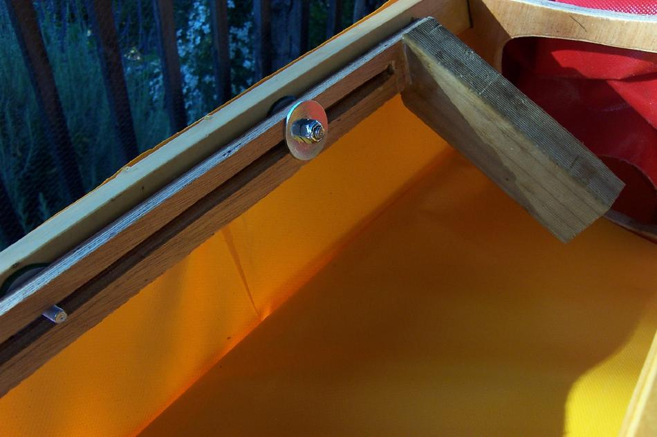

| Sea Pup by David Humphries | Menu Previous Page Next Page |
|
 FOOT BRACE - David has designed a simple but effective foot brace setup. The foot braces are held in place on two bolt plates . He routed an appropriate size hole down the centre of 2 strips of plywood. These then sit astride the bolts and are held in place with wing nuts and washers. Loosen the wing nuts to adjust the foot braces to the appropriate length for the paddler. The footpiece is simply a section of treated pine epoxied and screwed to the ply slider. The limiting factor on adjustment is the amount of space between the forms/frames. |
|